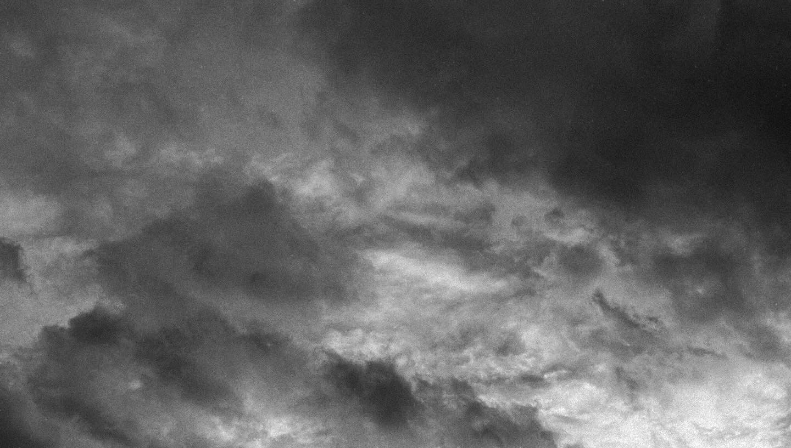
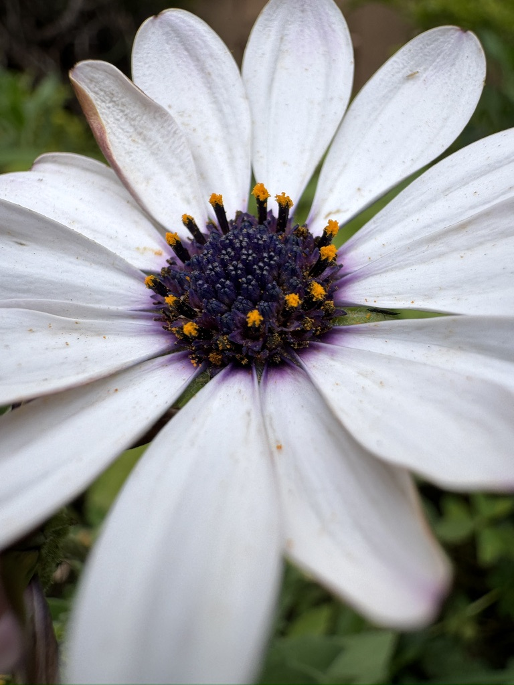
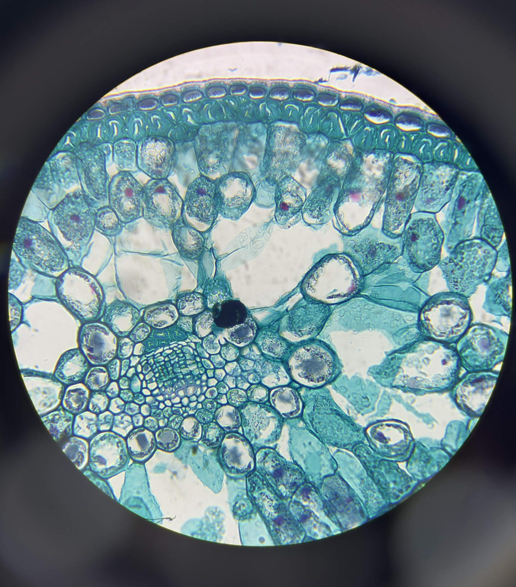
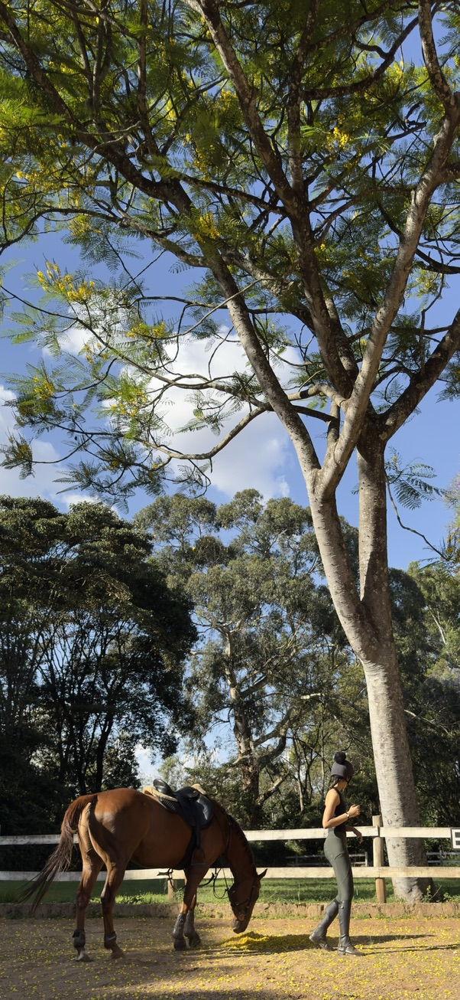
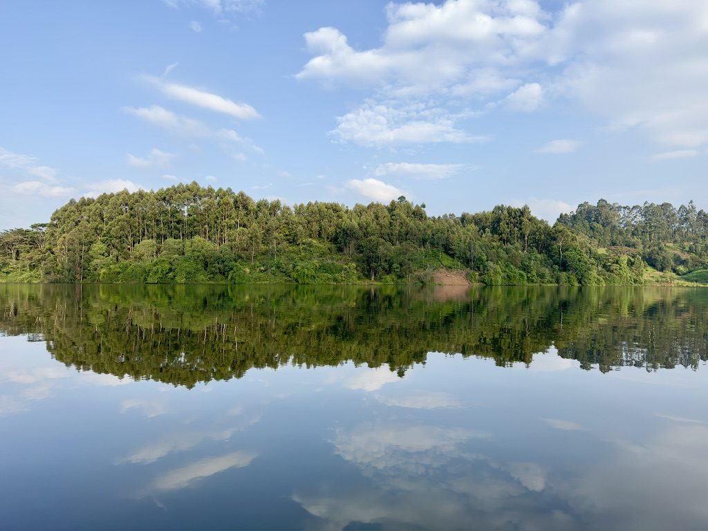
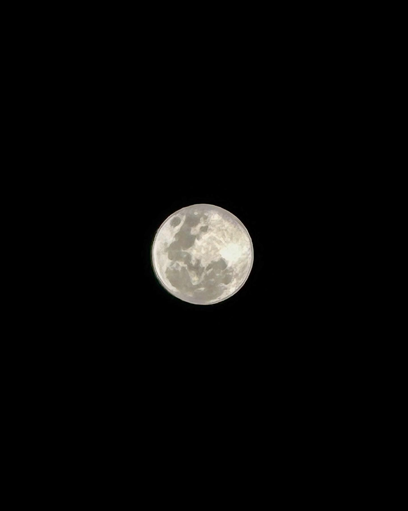
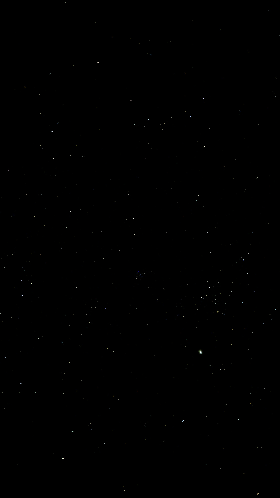
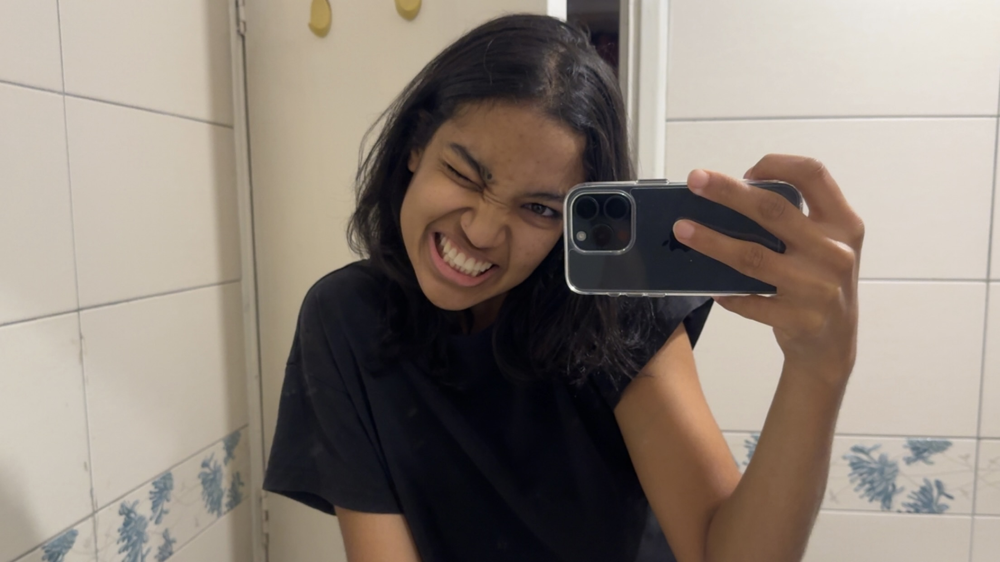

Collected Observations
A collection of moments I couldn't leave behind.
Scroll slowly ↓

Some exist for only a moment.
Some appear under a microscope.


Some understand without speaking.
Some journeys begin above us.

Some only reveal themselves when still.

Some have existed for billions of years.
Some appear among the stars.


About
Everything begins with noticing.
I'm Iman, a student and photography enthusiast who enjoys capturing quiet moments in nature, science and everyday life. Through this collection, I document details that often go unnoticed, creating a visual archive gathered over several years.
This collection is made up of small observations: flowers, textures, microscopic details and distant skies. Photography allows me to hold onto moments that might otherwise disappear.
Some subjects last only seconds. Others have existed far longer than we have. Together, they form a record of the things I noticed.
Contact